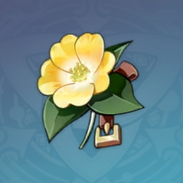

Набор артифактов
Искатель приключений
Искатель приключений — это набор артефактов в Genshin Impact, который увеличивает здоровье персонажа и восстанавливает HP при открытии сундуков. При экипировке двух предметов даётся бонус +1 000 к здоровью, а полный комплект из четырёх предметов восстанавливает 30% HP каждый раз, когда персонаж открывает сундук. Эти артефакты можно найти в сундуках по всему Тейвату, особенно в начальных регионах, таких как Мондштадт и Ли Юэ. Набор часто выпадает из сундуков, наград за квесты и при исследовании мира.